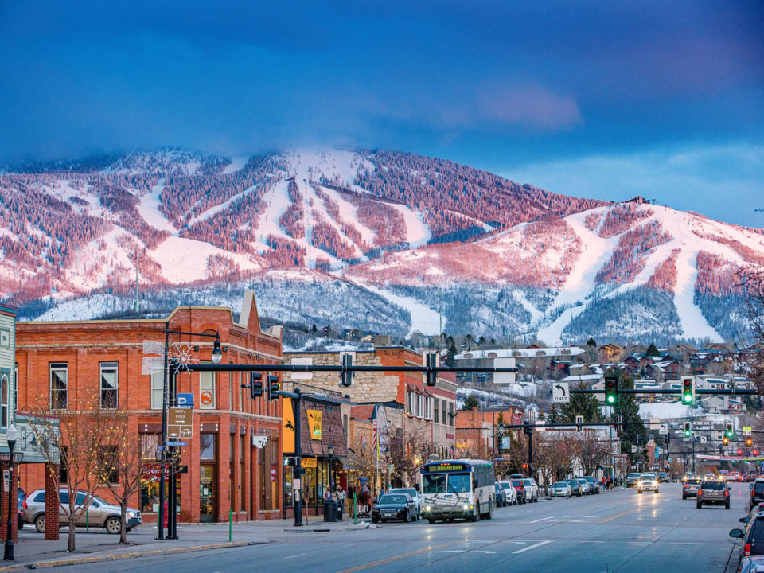

Steamboat Springs
City Overview
Colorado would only be complete with mention of its incredible mountain towns and resorts. Steamboat Springs is one of these destinations and is hugely popular with residents and tourists alike. The small population of 13,244 (Bureau, Steamboat Springs City, Colorado 2022) is pretty indicative of the size of many mountain towns. Still, Steamboat also sees thousands and thousands of tourists every year who come to partake in the recreation and relaxation that Steamboat Springs offers. While many resort towns are known for the busy season during the Winter, during which many people come to ski and snowboard, Steamboat also sees much tourism in the summer when hiking and biking take over those same slopes. Relaxation and recreation await anyone who finds themselves in Steamboat Springs. The city has been a staple destination for Coloradoans and out-of-state tourists since it was founded in 1900 (Springs, History of steamboat springs).
Source: United States Census Bureau
Source: steamboatsprings.net
Region and Economy
Steamboat is located a few hours from Denver in the north-western area of the state in the Yampa Valley. Luckily, the scenic drive through the Rockies is worth the three-hour trip from Denver. Many of Colorado's mountain towns are less populated than bigger cities in terms of long-time residents. However, tourism sites bring in much money and primarily have economies based on that tourism. Steamboat has more wealthy residents living there, especially compared to the state average income of $89,302 (Bureau, State of Colorado 2022). The average income enjoyed in Steamboat for year-round residents is about $93,280 (Bureau, Steamboat Springs City, Colorado 2022).
Source: steamboatchamber.com
Source: United States Census Bureau
Tourism and Activities
Steamboat Springs is a major hub for tourism, as most come to the mountain town during the Winter. One of Colorado's premier ski resorts is here, and thousands of people come to the city yearly to enjoy Winter sports. Luckily, the slopes are beneficial in other seasons. Many will also come in warmer times to enjoy mountain biking, hiking, or climbing. Nevertheless, the city of Steamboat has other offerings besides the surrounding mountains. Steamboat is a scenic place to participate in many local music and art festivals. Many of these annual activities bring people back year after year. Strawberry Hot Springs is just a quick drive up the mountain from Steamboat for those looking for ultimate relaxation (Healing starts here. 2023). These natural hot springs are one the most beautiful places to visit. Every trip would be complete with going to the hot springs.
Source: steamboat.com
Source: strawberryhotsprings.com